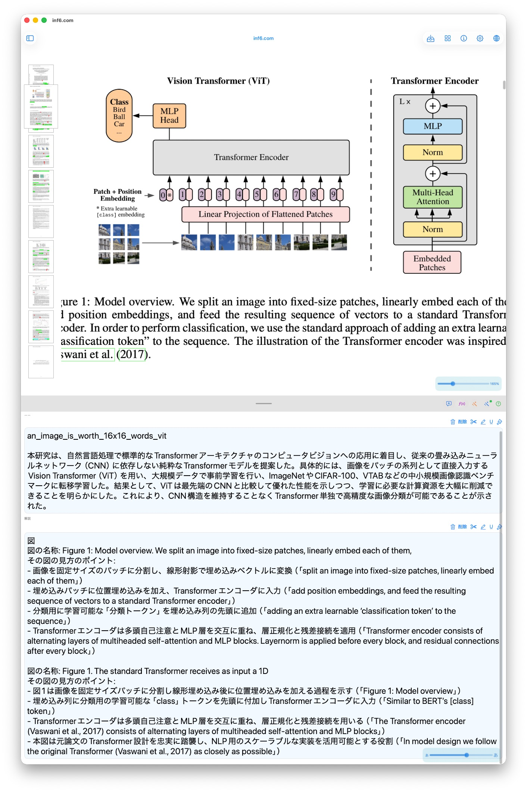
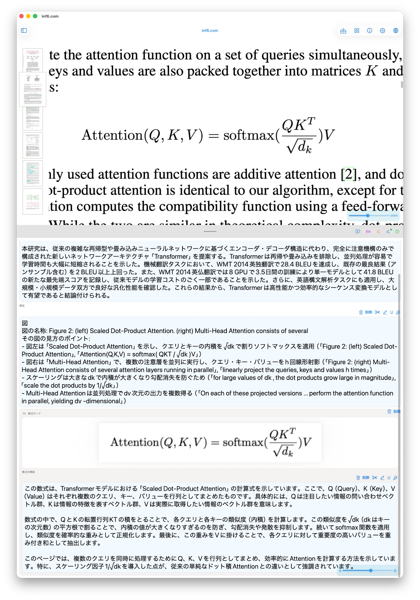
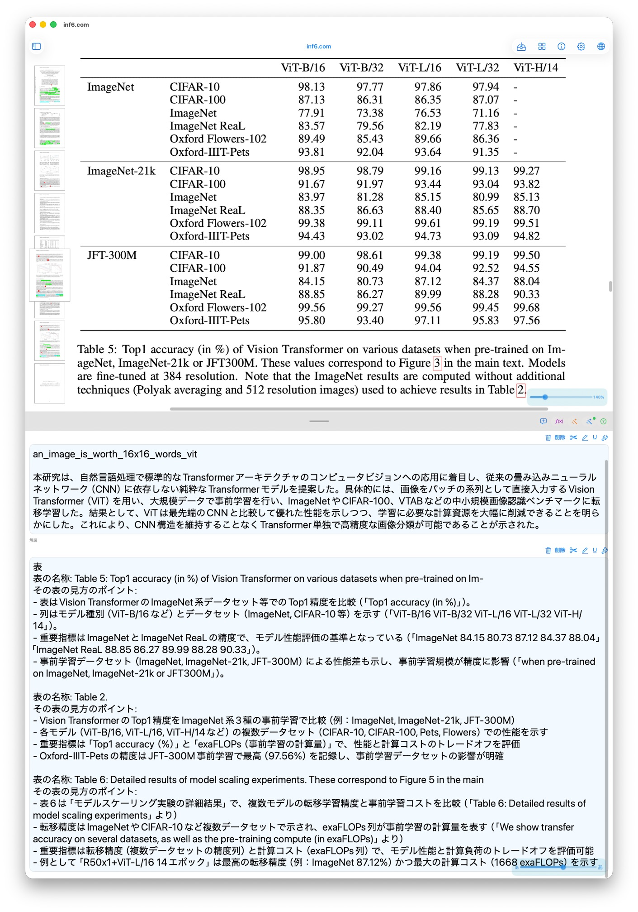
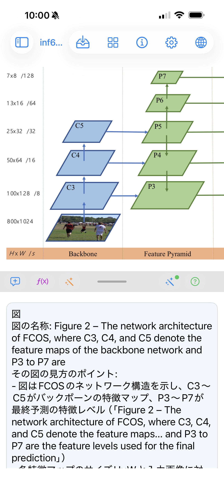
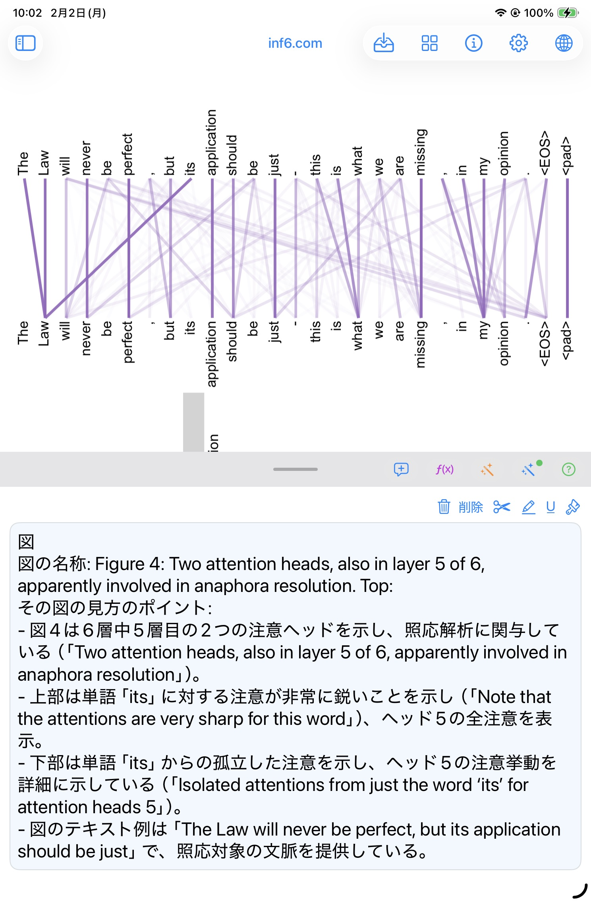

知識を得るためだけに
何十年もかけるスキームは
終わりを迎えた。
理解は不可欠になった。
活版印刷が写本師を過去にしたように、AI が暗記力を過去にしている。
学校の12年、大学の4年、資格勉強の数年——その大半は「知識を頭に入れる」ための時間だった。AI はその時間を、数秒に圧縮した。
これは学習の否定ではない。学習の再定義である。
| AI が代替したもの | 人間に残るもの |
|---|---|
| 知識の保有・記憶 | 境界を判断する力 |
| 情報の検索・要約 | 失敗条件を読む力 |
| 定義の再生 | 文脈で選択する力 |
| 手順の暗記 | 新しいものを発明する力 |
AI が知識を保持するから、人間は知識を保持しなくても良いのか——違う。
AI が保持するのは情報である。人間が持つべきは判断力である。
「この状況でどちらを選ぶか」「どこで崩れるか」「なぜそれが成立するか」——これらは、AI に問うことができても、AI が代わりに判断することはできない。判断するのは、常に人間である。
The decades-long scheme of
accumulating knowledge
is over.
Judgment is irreplaceable.
Just as the printing press made scribes obsolete, AI has made memorization obsolete.
12 years of school, 4 years of university, years of certification study — most of that time was spent putting knowledge into your head. AI compressed that to seconds.
This is not the end of learning. It is the redefinition of learning.
| What AI replaced | What remains human |
|---|---|
| Holding and memorizing knowledge | The power to judge boundaries |
| Searching and summarizing information | The power to read failure conditions |
| Reciting definitions | The power to choose in context |
| Memorizing procedures | The power to invent something new |
Since AI holds knowledge, do humans no longer need to hold knowledge? — No.
What AI holds is information. What humans must possess is judgment.
"Which do I choose in this situation?" "Where does this break down?" "Why does this hold?" — You can ask AI these questions, but AI cannot make the judgment for you. The judgment is always human.
知のサバイバルコンパス
今この瞬間、何を知っていて、何を知らないか。
知らないことのリスクは何か。
いつまでに知らなければならないのか。
それを照らし、次に向かうべき方向を示す。
inf6.com は PDF ビューワーではない。AI チャットでもない。試験対策ツールでもない。
AI が既存知を無限に供給し、脳科学に従った測定で判断力を内面化させる機構である。
知のメジャメント
「知っている」の定義は、定義を再生できることではない。説明できる / 比較できる / 選べる / 失敗条件を言える——これらを達成できて初めて「知っている」とみなす。
知のリスク判定
知らないことのコストとリスクを評価する。リスク = 未知の重要度 × 期限の近さ × 代替不可能性。AI が代わりに知っていても、人間が判断できなければリスクは消えない。
知の期限管理
いつまでに何を知らなければならないか。試験日、プロジェクト期限、組織の要求を起点に、期限に対して逆算した習得順序を提示する。
知の起源をたどる
概念がどの論文から生まれたかを特定し、その論文の図・表・数式を根拠に理解点を組み立てる。演習は選択式ではない。正しい内容だけを箇条書きで示し、採点しない。
The Knowledge Survival Compass
At this moment, what do you know and what don't you know?
What is the risk of not knowing?
By when must you know it?
inf6.com illuminates the answer and points you in the right direction.
inf6.com is not a PDF viewer. Not an AI chat. Not an exam prep tool.
It is a mechanism: AI supplies unlimited existing knowledge, and brain-science-aligned measurement internalizes judgment.
Knowledge Measurement
"Knowing" is not defined by reciting a definition. Can you explain it? Compare it? Choose it? State its failure conditions? Only when these are achieved is "knowing" recognized.
Risk Assessment
Evaluate the cost and risk of not knowing. Risk = importance of the unknown × urgency × irreplaceability. Even if AI knows it, if you cannot judge — the risk remains.
Deadline Management
By when must you know what? Starting from exam dates, project deadlines, and organizational requirements — present the acquisition sequence working backwards from the deadline.
Tracing the Origin of Knowledge
Identify the paper a concept came from, then build the understanding points on the figures, tables, and equations of that paper. Exercises are not multiple choice: only what is correct is stated, as a bullet list, and nothing is scored.
入り口は一つ。
チャットではなく、測定器。
アプリを開くと、システムが今日の最危険原子を選ぶ。ユーザーが決めるのは「挑むか否か」だけだ。
起動 → 挑戦が来る
タブなし。選択肢なし。今日の最危険な知識原子が全画面に現れる。
全画面の問い
声に出して、自分の言葉で説明する。入力欄はない。これは対話ではなく、試験である。
自己判定（二択のみ）
「言えた」か「言えなかった」か。それだけだ。システムが判断するのではなく、人間が判断する。
知のマップに刻む
結果が知識グラフに永続する。JSON で、ローカルに、人間が読める形で。アプリが消えても知は残る。
AI は道具である。
判断するのは、常に人間である。
One entry point.
A measurement instrument, not a chat.
When you open the app, the system selects today's most dangerous knowledge atom. The only decision you make is: challenge it or not.
Launch → The challenge arrives
No tabs. No choices. Today's most dangerous knowledge atom appears full-screen.
Full-screen question
Speak it out loud in your own words. No input field. This is not a conversation — it is an examination.
Self-judgment (binary only)
"Said it" or "couldn't say it." That is all. The system does not judge — the human does.
Stenciled into the knowledge map
The result persists in the knowledge graph. As JSON, locally, in human-readable form. Even if the app disappears, the knowledge remains.
AI is a tool.
The judgment is always human.





iPhone · iPad · Mac
App Store から入手できます。AI 機能には OpenAI API キーが必要です。
iPhone · iPad · Mac
Available on the App Store. AI features require your OpenAI API key.